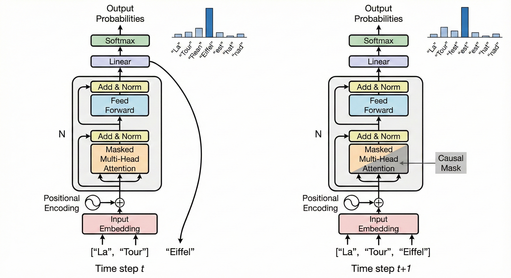

L'architecture Transformer a marqué un point d'inflexion dans l'histoire du Deep Learning. Initialement conçue pour la traduction automatique (Sequence-to-Sequence), elle est devenue la fondation des Large Language Models (LLMs) modernes.
Dans cet article, nous déconstruisons formellement le mécanisme d'attention original avant d'analyser pourquoi les architectures modernes (GPT-4, Llama 2, Falcon) ont délaissé l'encodeur pour se concentrer exclusivement sur le décodeur.
1. Le Cœur du Réacteur : Scaled Dot-Product Attention
Contrairement aux RNNs qui traitent l'information de manière séquentielle (\(t, t+1, ...\)), le Transformer traite l'ensemble de la séquence en parallèle. La brique fondamentale est le mécanisme d'attention.
Définition Formelle
Soit une séquence d'entrée transformée en vecteurs. Pour chaque token, nous projetons son embedding dans trois sous-espaces distincts à l'aide de matrices de poids apprenables \(W^Q, W^K, W^V\) :
- Query (\(Q\)) : Ce que le token cherche.
- Key (\(K\)) : Ce que le token offre comme information.
- Value (\(V\)) : Le contenu informationnel intrinsèque du token.
L'attention est calculée comme une somme pondérée des valeurs \(V\), où les poids dépendent de la similarité entre la requête \(Q\) et les clés \(K\). L'équation canonique est :
$$ \text{Attention}(Q, K, V) = \text{softmax}\left(\frac{QK^T}{\sqrt{d_k}}\right)V $$Intuition : Le terme \(QK^T\) calcule le produit scalaire (similarité) entre chaque paire de mots. Nous divisons par \(\sqrt{d_k}\) (la racine de la dimension des clés) pour éviter que le produit scalaire ne devienne trop grand, ce qui pousserait le Softmax dans des zones où les gradients sont quasi-nuls (vanishing gradients).
Positional Encoding
Le mécanisme d'attention étant invariant par permutation (il traite "Chat mange souris" et "Souris mange chat" de la même façon mathématique sans contexte de position), nous devons injecter une information de position. Vaswani et al. utilisent des fonctions sinusoïdales :
$$ PE_{(pos, 2i)} = \sin(pos / 10000^{2i/d_{model}}) $$ $$ PE_{(pos, 2i+1)} = \cos(pos / 10000^{2i/d_{model}}) $$1.2. Le Décodeur Original et la Cross-Attention
Dans l'architecture originale (vaswani et al.), le décodeur a pour rôle de générer la séquence cible (ex: la traduction française) en se basant sur la représentation riche fournie par l'encodeur.
Chaque couche du décodeur possède une sous-couche supplémentaire cruciale : la Cross-Attention (ou Encoder-Decoder Attention).
Définition Formelle
Contrairement à la Self-Attention où les requêtes, clés et valeurs proviennent de la même source, la Cross-Attention mélange deux flux d'informations :
- Query (\(Q\)) : Provient de la couche précédente du Décodeur (ce que l'on cherche à traduire).
- Key (\(K\)) et Value (\(V\)) : Proviennent de la sortie finale de l'Encodeur (le contexte de la phrase source).
Si l'on note \(H_{dec}\) l'état caché du décodeur et \(H_{enc}\) la sortie de l'encodeur, l'équation devient :
$$ \text{CrossAttention}(H_{dec}, H_{enc}) = \text{softmax}\left(\frac{(H_{dec}W^Q)(H_{enc}W^K)^T}{\sqrt{d_k}}\right)(H_{enc}W^V) $$Cette distinction est fondamentale : les matrices \(K\) et \(V\) sont calculées une seule fois à partir de l'encodeur, tandis que \(Q\) change à chaque nouveau token généré par le décodeur.
Intuition Naturelle
Imaginez un traducteur humain. Le mécanisme de Self-Attention (masqué) lui permet de vérifier la cohérence grammaticale de ce qu'il est en train d'écrire ("Je suis" \(\rightarrow\) accord correct). La Cross-Attention, c'est le moment où il lève les yeux vers le texte original pour chercher le sens du mot source précis qu'il doit traduire maintenant.
"Le décodeur 'requête' (Query) de l'information à l'encodeur, qui lui présente ses 'clés' (Keys) pour voir ce qui correspond, et renvoie les 'valeurs' (Values) pertinentes."
2. L'Architecture Decoder-Only (GPT, Llama, Falcon)
Le papier original de 2017 utilisait une architecture Encoder-Decoder (l'encodeur lit la source, le décodeur génère la traduction). Cependant, la majorité des LLMs actuels (sauf T5 ou BART) utilisent une architecture Decoder-Only.

Pourquoi abandonner l'Encodeur ?
Pour des tâches de génération de texte (Causal Language Modeling), l'objectif est de prédire le token suivant \(x_{t}\) sachant les précédents \(x_{1}, ..., x_{t-1}\). L'encodeur (qui a accès à toute la phrase, passé et futur via l'attention bidirectionnelle) introduit une "fuite" d'information du futur inacceptable pour la génération pure.
Masked Self-Attention (Masque Causal)
Dans un modèle Decoder-Only, nous modifions l'équation de l'attention en ajoutant un masque \(M\). Ce masque assure qu'un token à la position \(t\) ne peut porter attention qu'aux positions \(i \leq t\).
Formellement, la matrice de masque \(M \in \mathbb{R}^{T \times T}\) est définie par :
$$ M_{ij} = \begin{cases} 0 & \text{si } i \ge j \\ -\infty & \text{si } i < j \end{cases} $$L'équation de l'attention devient :
$$ \text{MaskedAttention}(Q, K, V) = \text{softmax}\left(\frac{QK^T}{\sqrt{d_k}} + M\right)V $$Le terme \(-\infty\) dans le masque garantit qu'après l'application du Softmax, la probabilité d'attention vers les tokens futurs (\(j > i\)) est exactement de 0.
Exemple Concret de Génération
Imaginons que nous voulons compléter la phrase : "La Tour Eiffel est située à".
- Input (\(t=6\)) :
["La", "Tour", "Eiffel", "est", "située", "à"] - Le modèle calcule l'attention. Le token "à" peut regarder "Tour" et "Eiffel", mais ne peut pas voir ce qui n'a pas encore été généré.
- Output Logits : Le modèle sort une distribution de probabilité sur tout le vocabulaire (ex: 50 000 tokens).
- Sampling : La probabilité la plus haute est sur le token
"Paris". - Nouvelle itération : L'input devient
["La", "Tour", "Eiffel", "est", "située", "à", "Paris"]et on recommence pour prédire le point final.
Modélisation Probabiliste
L'objectif d'entraînement d'un LLM Decoder-Only est de maximiser la log-vraisemblance (Log-Likelihood) sur le dataset \(D\) :
$$ \mathcal{L}(\theta) = \sum_{x \in D} \sum_{t=1}^{T} \log P(x_t | x_{1}, ..., x_{t-1}; \theta) $$C'est cette contrainte d'autorégressivité qui force le modèle à "comprendre" la structure du langage plutôt que de simplement classifier des mots.